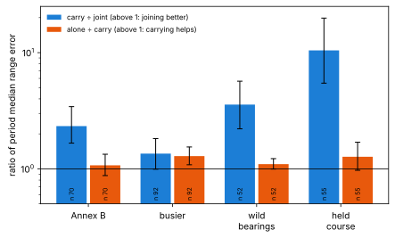
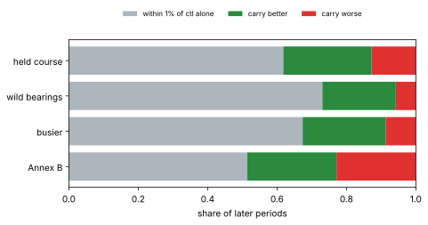
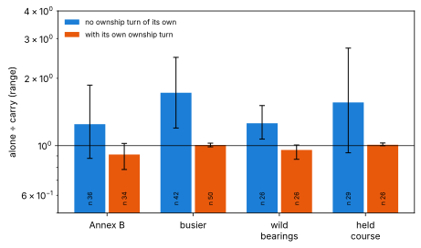

Carrying state across gaps, against joining through them
2026-11-19 · spec 027 · gitma2 · nothing trained
The question
- Spec 025: one solve over several periods of a target (joint) beats each period alone
- The cheaper habit: solve period by period, handing each answer on
- The carry tested: the previous period's declared state, run forward through the gap, as a start for the next period's own search
- A start, not information: nothing from the earlier period enters the fit's likelihood or prior
Joining beats this carry; the carry barely moves ctl alone

Annex B (decides): carry ÷ joint 2.33 [1.66, 3.43]; alone ÷ carry 1.07 [0.88, 1.34], not shown. Busier: 1.351 [0.993, 1.820], not separated (a knife edge); carrying helps 1.29 [1.09, 1.54].
Most periods end at the same answer

Where the carry differs it is a different minimum of the period's own fit, not information the evidence endorses.
Where it moves anything: periods without their own ownship turn

Busier without an own turn 1.72 [1.20, 2.48]; Annex B with one 0.91 [0.78, 1.02] (no harm shown, not "no cost").
Not achieved
- A carried prior (state and covariance through the gap): untested, so nothing is said about carrying in general
- The panel withdrew the first record's recommendation of the carry: not the rule's output
- No unit test of the carry chain; IMM/EKF tracks
Next (owner's choice)
- A carried prior, scored on spent seeds first
- A per-period consistency flag and markers on inferred gap manoeuvres
- An uncertainty for the joined track; longer gaps
Write-up: /blog/2026/11/19/carry-across-gaps · Record: experiments/20261119-tl9 · Figures: scripts/research/tl9_charts.py